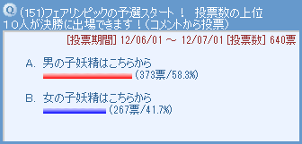
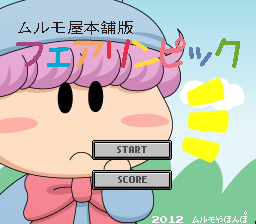
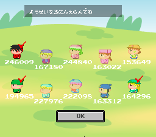
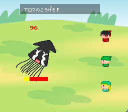
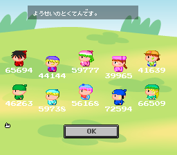
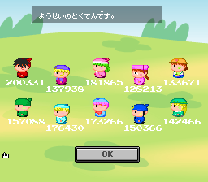
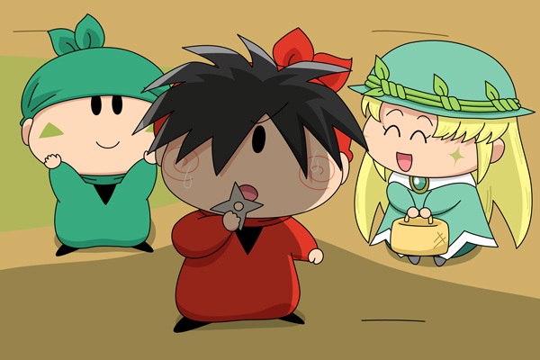

妖精界も人間界と同様に、４年に一度オリンピックならぬフェアリンピックが開催されるのは知っての通り。ムルモ屋本舗でもフェアリンピックに合わせて企画が開催されるのは皆さんご存知でしたでしょうか？
２０１２年７月に第２回 ムルモ屋本舗版フェアリンピックを開催いたしました。前回の２００８年から４年ぶりの開催ですね。
それでは皆さんと一緒に盛り上がった１か月間を記事に残したいと思います。
まずは予選の結果から。年末の妖精人気投票形式で、票数の多い順で１０名に絞られます。[コメント一覧]
| １位 | 119票 | ヤシチ |
| ２位 | 88票 | ムーン |
| ３位 | 87票 | リルム |
| ４位 | 50票 | アンナ |
| ５位 | 45票 | ワカバ |
| ６位 | 39票 | ハンゾー |
| ７位 | 31票 | ミルモ |
| ８位 | 29票 | ムルモ |
| ９位 | 20票 | ネズミ アロマ |
| １１位 | 18票 | ヤマネ |
| １２位 | 14票 | アクミ |
| １３位 | 13票 | パピィ |
| １４位 | 8票 | サスケ |
| １５位 | 5票 | チック カメリ |
| １７位 | 4票 | フィア |
| １８位 | 3票 | センリ ウィン |
| ２０位 | 2票 | ミレン ガビン マンボ ドンタ ピクモ |
| ２５位 | 1票 | イチロー アテネ ビケー ポンタ アクア ピカリ ソフト アンリ コヨミ トモン |

最近のヤシチ人気がここでも強さを発揮し、ヤシチが堂々１位で予選通過となりました。しかし人気投票では１位が指定席であるパピィがまさかの予選落ち…。いきなりの大波乱に皆さんも驚いたのではないでしょうか。
９位のネズミとアロマまでが決勝に進むことができます。なかなか個性的なメンバー揃いとなりましたね。
ネズミ「拙者がぎりぎり予選通過とは・・・。油断できないでござるな」
アロマ「ネズミさん、決勝でも一緒にがんばりましょうね」
ネズミ「お主もがんばるでござるよ」
決勝では、専用のFlashアプリを用いて、１０人の順位を競い合いました。
競技のルールは以下となります（掲示板掲載のルール）
・妖精10人の得点を競います。
・まず妖精３人を選んでください。
・敵に与えたダメージが得点に加わります。
・１時間に１回参加できます。
・８月９日 ２３時５９分まで。（７月２８日からスタート）

期間中、ムルモ屋本舗のトップページに
こんなFlashを配置していました。

まず妖精を３人選びます。

選んだ３人が敵と戦い、与えたダメージが
得点として加算されます。

８月５日時点の途中経過。
この時点ではネズミがトップです。
そして・・・・

８月９日終了時の結果です。
ヤシチが逆転優勝！金メダルゲットです。
リルムとミルモの怒涛の追い上げもすごかった！

ヤシチ「今度の相手はこの巨大ナンダカワカンナイノか・・・」
ハンゾー「兄貴～。がんばるのら～」
アロマ「戦いが終わったら一緒にお茶にしましょう♪」
ヤシチ「く・・・お前ら・・・」
今回のフェアリンピックはいかがでしたでしょうか？ 次回はさらに４年後の２０１６年・・・！？ ずいぶん先の話ですが、また楽しんでいただければと思います(^^)。
(2013/3/30)